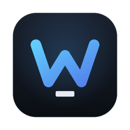
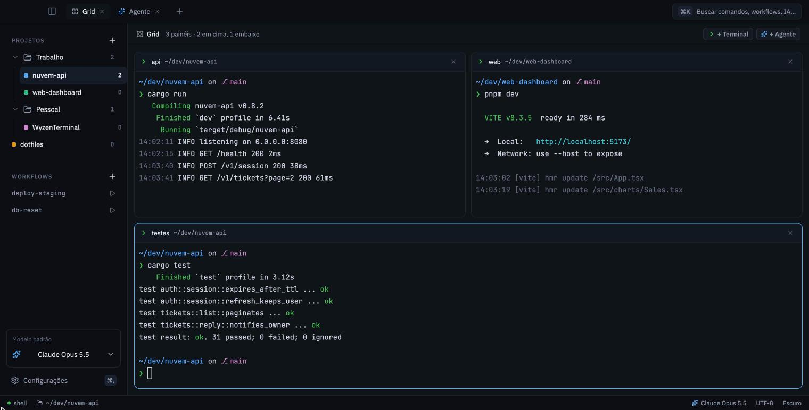
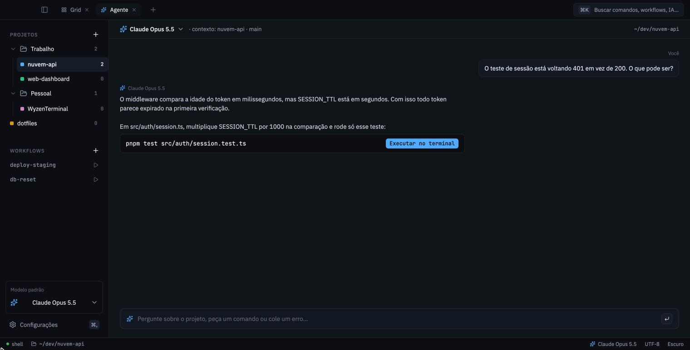

Projetos em pastas
Cada projeto guarda a própria pasta, e todo terminal novo já abre nela. Na barra lateral você cria pastas e arrasta os projetos para dentro, do jeito que fizer sentido para você.

Wyzen TerminalGrátis e de código aberto
O Wyzen Terminal abre cada projeto na pasta certa, junta vários terminais num grid e deixa você perguntar ao Claude, ao GPT ou ao Gemini sem trocar de app.

Cada projeto guarda a própria pasta, e todo terminal novo já abre nela. Na barra lateral você cria pastas e arrasta os projetos para dentro, do jeito que fizer sentido para você.
Até seis terminais ou agentes lado a lado. Arraste as divisórias para dar mais espaço a quem precisa e renomeie cada painel: "backend" e "frontend" dizem mais que dois "zsh".
Deixe o Claude Code trabalhando numa aba e siga em outra. Quando ele termina ou pede aprovação, aparece um aviso com o nome da aba, e a aba fica marcada até você olhar.
Ao reabrir o app, abas, nomes, tamanhos do grid e a pasta de cada terminal voltam. Os programas que estavam rodando precisam ser iniciados de novo.
Abra uma aba de agente e pergunte sobre o projeto, cole um erro ou peça um comando. O agente sabe em que pasta e branch você está. Quando a resposta traz um comando, um clique manda ele para o terminal.
Funciona com Claude, GPT e Gemini usando a sua própria chave de API, que fica guardada no cofre do sistema (Keychain, Credential Manager ou Secret Service). Cada conversa pode usar um modelo diferente.

Quando sai uma versão nova, o app avisa e instala com um clique. Se algum terminal estiver rodando algo, ele pergunta antes de reiniciar. No macOS e no Linux dá para instalar agora e só usar a versão nova na próxima vez que abrir o app.
Os instaladores ainda não têm assinatura da Apple nem da Microsoft, então o sistema mostra um aviso na primeira abertura. Os passos abaixo liberam o app.
.dmg e arraste o Wyzen Terminal para Aplicativos.
Se aparecer a mensagem de que o app "está danificado", rode uma vez no Terminal:
xattr -dr com.apple.quarantine "/Applications/Wyzen Terminal.app"
.exe.chmod +x e abra. É o único formato que se
atualiza sozinho.
.deb e o .rpm instalam pelo gerenciador de pacotes; para atualizar, baixe o novo.